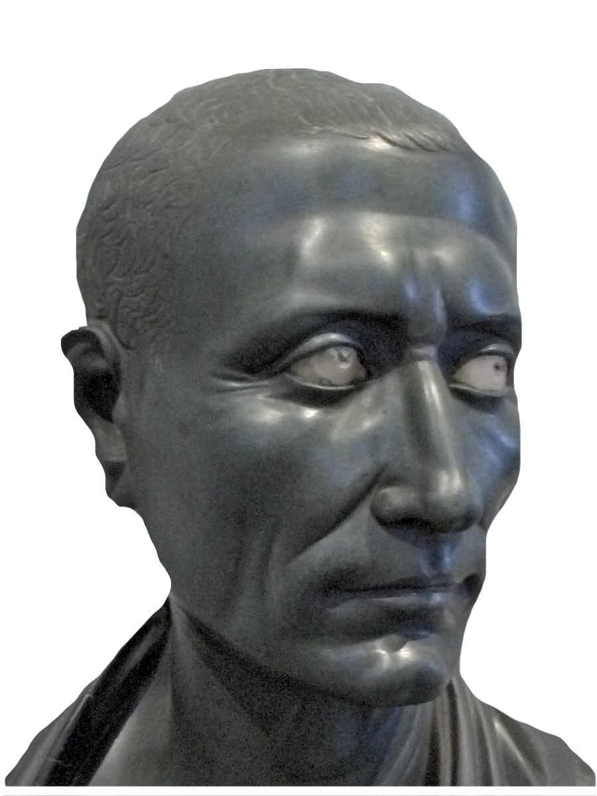

Poem
Your team member, an archaeologist and a researcher of Roman culture has found a secret room and this scripted poem while your expedition stopped in Mediterranean Europe. The poem helps you to open the next station, to make you be more close to the treasure you are looking for. However, the poem is not full. There is no answer to the question that the author asked. Who is the author, what had he wondered?
Your key to open the next station is the answer of his question. Remember, there are many of other pirates-researchers, who look for the same treasure as you do!
